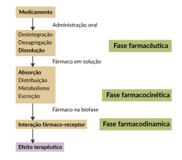

A Figura abaixo resume ambas as fases, com ênfase na administração oral, que é a via mais importante de uso dos fitoterápicos.

A seguir serão detalhadas algumas fases importantes para melhor entendimento dos fatores envolvidos na produção dos efeitos farmacológicos dos medicamentos.